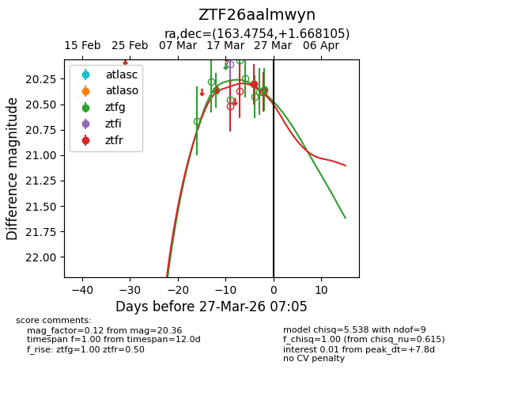
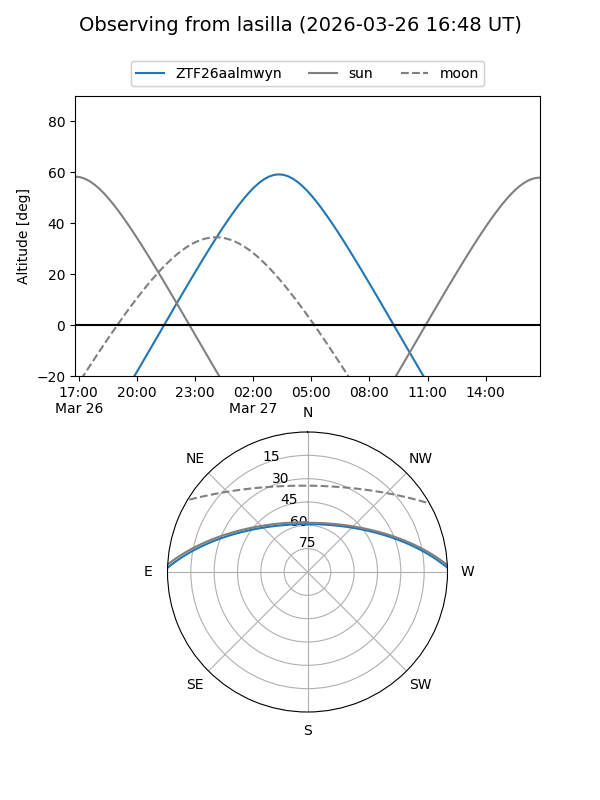
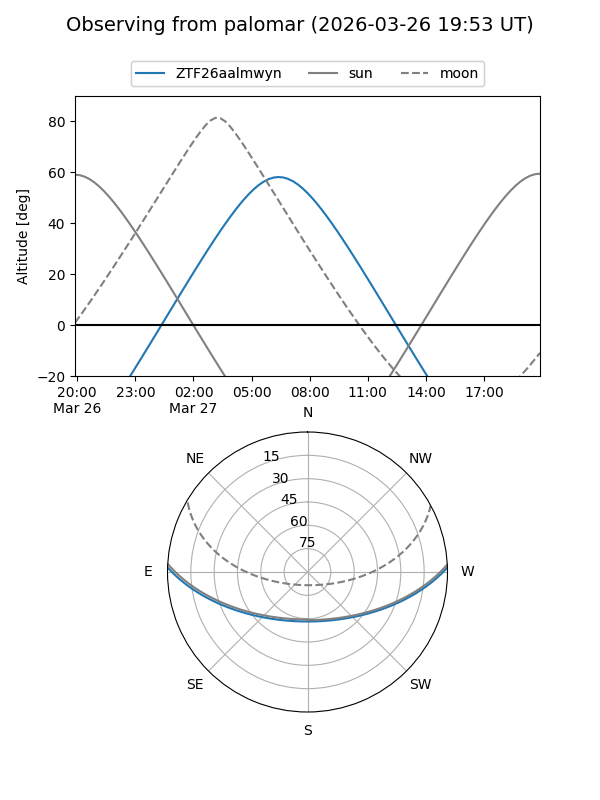
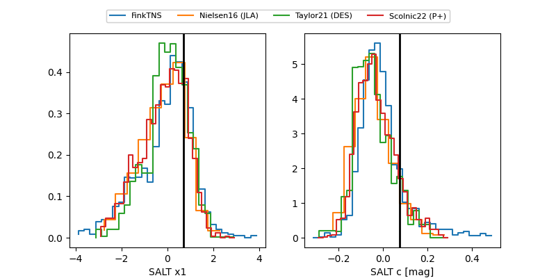

ZTF26aalmwyn
Target ZTF26aalmwyn at 2026-03-27 07:07
Aliases and brokers:
FINK: link
Lasair: link
ALeRCE: link
alt names
ZTF26aalmwyn (ztf,fink_ztf)
Coordinates:
equatorial (ra, dec) = 163.4754,+1.66810
equatorial (HMS+DMS) = 10:53:54.09,+01:40:05.18
galactic (l, b) = (250.0556,+52.03959)
Flags:
Photometry:
last ztfg=20.36, ztfr=20.30
2 ztfg, 1 ztfr detections
Lightcurve

Visibility


Additional plots
